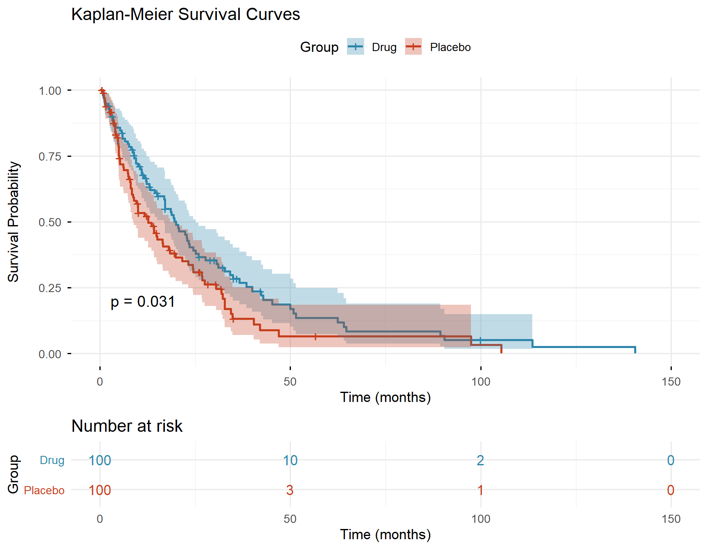

Kodu Göster
library(survival)
library(survminer)Medyan Statistics
February 28, 2026
Survival analysis is one of the essential statistical methods in medical research. It is used to analyze the time until an event occurs (death, recurrence, recovery, etc.).
In this guide, you will learn how to create Kaplan-Meier curves, compare groups with the log-rank test, and produce publication-quality graphics.
Let’s create a simulated clinical trial dataset: 200 patients in Drug and Placebo groups.
time status group
1 3.198001 0 Drug
2 2.459944 1 Drug
3 28.929355 0 Drug
4 5.902881 1 Drug
5 12.190112 1 Drug
6 16.882902 1 Drug# Create survival object
surv_obj <- Surv(time = df$time, event = df$status)
# KM fit
km_fit <- survfit(surv_obj ~ group, data = df)
# Log-rank test
lr_test <- survdiff(surv_obj ~ group, data = df)
p_val <- 1 - pchisq(lr_test$chisq, df = 1)
# Plot
ggsurvplot(
km_fit,
data = df,
pval = TRUE,
conf.int = TRUE,
risk.table = TRUE,
risk.table.col = "strata",
palette = c("#2E86AB", "#C73E1D"),
xlab = "Time (months)",
ylab = "Survival Probability",
title = "Kaplan-Meier Survival Curves",
legend.title = "Group",
legend.labs = c("Drug", "Placebo"),
ggtheme = theme_minimal(base_size = 13)
)Warning: Using `size` aesthetic for lines was deprecated in ggplot2 3.4.0.
ℹ Please use `linewidth` instead.
ℹ The deprecated feature was likely used in the ggpubr package.
Please report the issue at <https://github.com/kassambara/ggpubr/issues>.
summary(km_fit)ggsave()The survival and survminer packages in R make it straightforward to produce publication-quality Kaplan-Meier analyses. Prepare your data, write a few lines of code, and get graphics ready for your manuscript.
For survival analysis or other statistical analyses, contact Medyan Statistics Consulting.
---
title: "Kaplan-Meier Survival Analysis in R: Step-by-Step Guide"
author: "Medyan Statistics"
date: "2026-02-28"
categories: [R, Survival Analysis, Medicine]
image: "kaplan_meier.png"
description: "Learn how to perform Kaplan-Meier survival analysis in R, commonly used in clinical studies. Step-by-step implementation with the survival and survminer packages."
lang: en
---
## Introduction
Survival analysis is one of the essential statistical methods in medical research. It is used to analyze the time until an event occurs (death, recurrence, recovery, etc.).
In this guide, you will learn how to create **Kaplan-Meier curves**, compare groups with the **log-rank test**, and produce publication-quality graphics.
## Required Packages
```{r}
#| message: false
#| warning: false
library(survival)
library(survminer)
```
## Data Preparation
Let's create a simulated clinical trial dataset: 200 patients in Drug and Placebo groups.
```{r}
set.seed(42)
n <- 200
df <- data.frame(
time = c(rweibull(n/2, shape = 1.2, scale = 24),
rweibull(n/2, shape = 1.0, scale = 16)),
status = sample(0:1, n, replace = TRUE, prob = c(0.25, 0.75)),
group = rep(c("Drug", "Placebo"), each = n/2)
)
head(df)
```
## Kaplan-Meier Curves
```{r}
#| fig-width: 9
#| fig-height: 7
#| fig-cap: "Kaplan-Meier survival curves: Drug vs Placebo groups"
# Create survival object
surv_obj <- Surv(time = df$time, event = df$status)
# KM fit
km_fit <- survfit(surv_obj ~ group, data = df)
# Log-rank test
lr_test <- survdiff(surv_obj ~ group, data = df)
p_val <- 1 - pchisq(lr_test$chisq, df = 1)
# Plot
ggsurvplot(
km_fit,
data = df,
pval = TRUE,
conf.int = TRUE,
risk.table = TRUE,
risk.table.col = "strata",
palette = c("#2E86AB", "#C73E1D"),
xlab = "Time (months)",
ylab = "Survival Probability",
title = "Kaplan-Meier Survival Curves",
legend.title = "Group",
legend.labs = c("Drug", "Placebo"),
ggtheme = theme_minimal(base_size = 13)
)
```
## Interpreting the Results
- **Median survival time**: Obtained via `summary(km_fit)`
- **Log-rank p-value**: Is the difference between groups statistically significant?
- **Confidence intervals**: The shaded area around the curve represents the 95% CI
```{r}
# Median survival times
print(km_fit)
```
## Tips for Academic Use
1. **Resolution**: Save with at least 300 DPI using `ggsave()`
2. **Risk table**: Always include in journal submissions
3. **Censoring**: Censored observations are shown with "+" marks
4. **Reporting**: Write as "Median survival was X months (95% CI: Y-Z)"
## Conclusion
The `survival` and `survminer` packages in R make it straightforward to produce publication-quality Kaplan-Meier analyses. Prepare your data, write a few lines of code, and get graphics ready for your manuscript.
---
*For survival analysis or other statistical analyses, contact [Medyan Statistics Consulting](https://medyanistdanismanlik.com).*